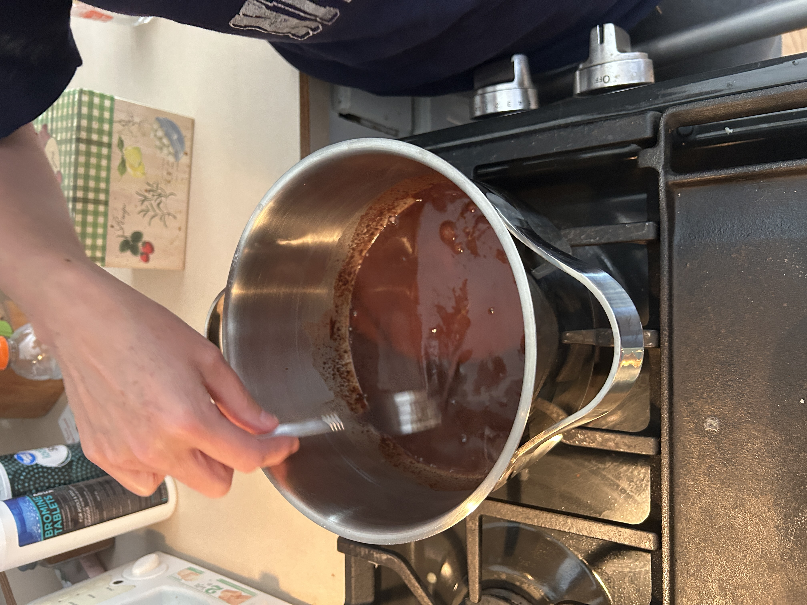

German sweet chocolate cake
Serves Cake
Equipment
- Stand mixer with paddle attachment
- Rubber spatula
- Mixing bowls (various sizes)
- Whisk
- 3 round cake pans (lined with parchment)
- Use a sauce pan to boil the needed amount of water
- Oven
- Measuring cups & spoons
- Egg separtor to get egg yolks
Ingredients
- Bakers German sweet chocolate
- 1/2 cup boiling water
- 1 cup butter
- 2 cups of sugar
- 4 egg yolks
- 1 tsp vanilla
Ingredients
- 2 1/2 cups sifted cake flour .
- 1 tsp baking soda
- 1/2 tsp salt
- 1 cup buttermilk
- 4 egg whites
Instructions: German sweet chocolate cake
-
Melt chocolate in hot water slowly or eles it will burn, when cooling take pan off burner to cool nicer for hot water

 -
Cream butter & sugar till fluffy. stand alone mixer or any mixer available

-
Add egg yolks, 1 at a time, beating well. Blend in vanilla & chocolate.
-
Sift flour with baking soda & salt. Add alternately with buttermilk/choco mixture. Beat till smooth. rubber spatula recommended

-
Fold in by hand beaten egg whites.

-
Pour into 3 round cake pans lined with parchment paper. for 350°F30-35 min minute. Cool in pans 15-20 min minute. Flip and remove paper.